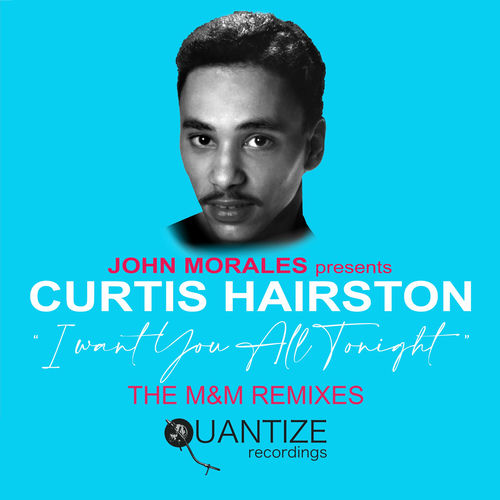

Curtis Hairston
Curtis Kinnard Hairston was an American soul/funk vocalist, who had a number of top 75 hit singles in the UK and US, both as a solo artist and as a featured artist in the B. B. & Q. Band. Hairston's signature hit came in 1985, when he reached No. 13 in the UK Singles Chart with "I Want Your Lovin' ".
Complete Discography & Tracklists (7)